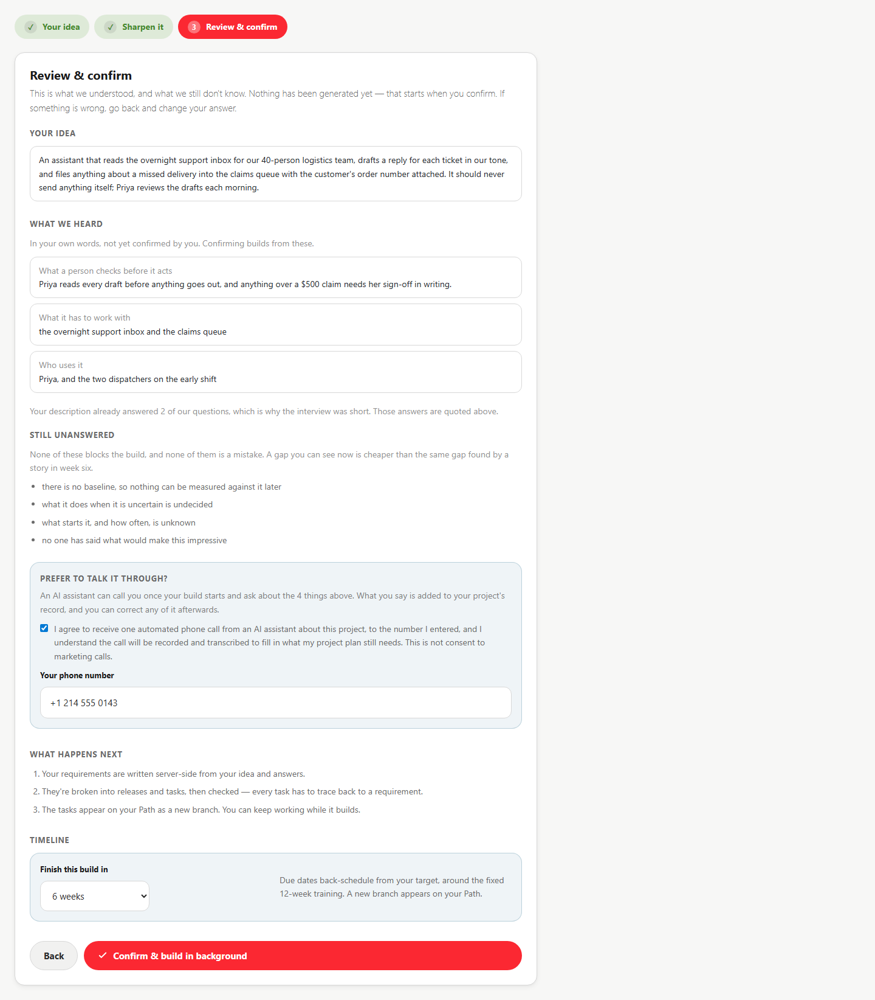
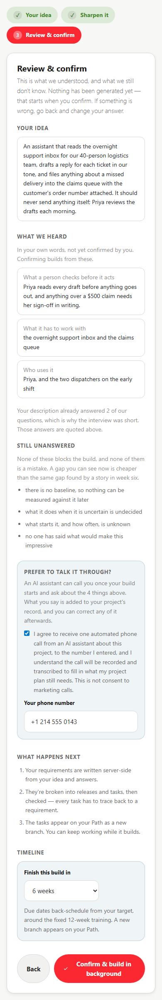
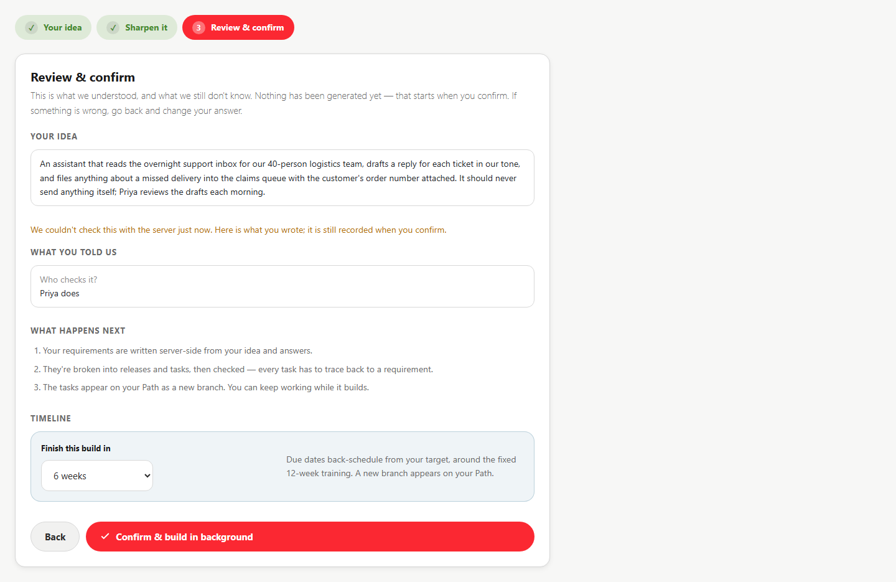
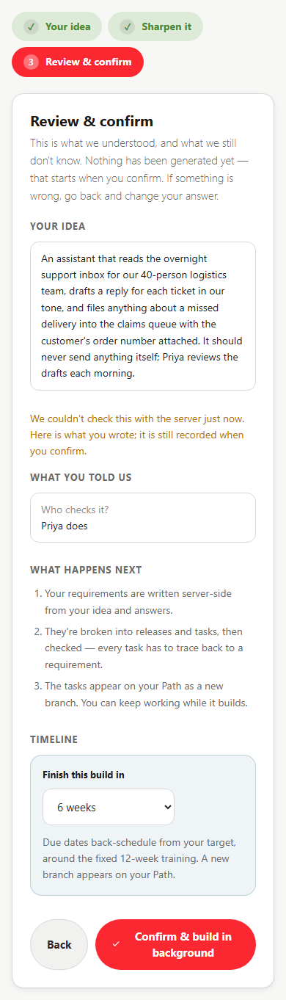
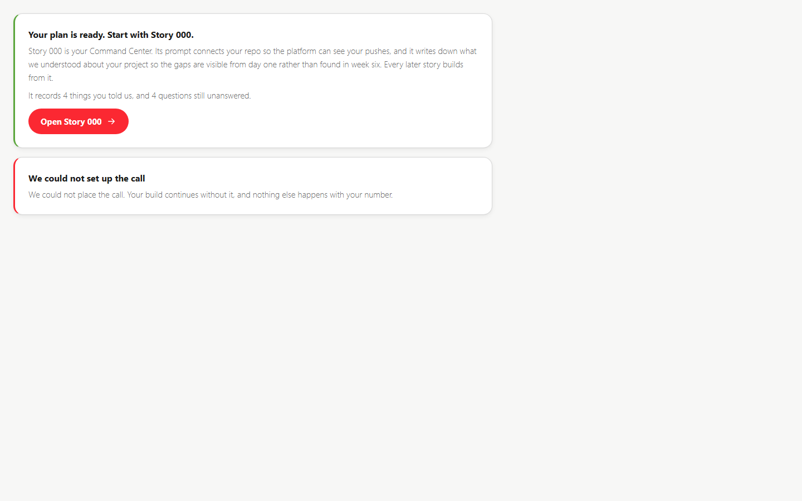
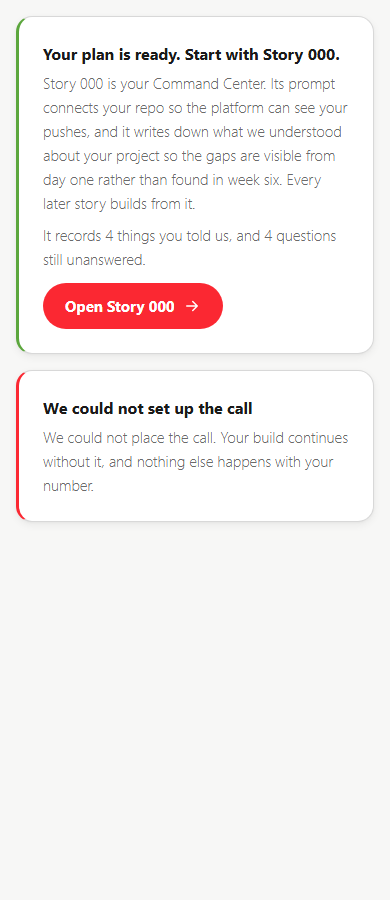
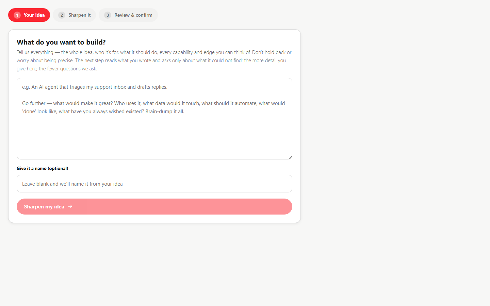
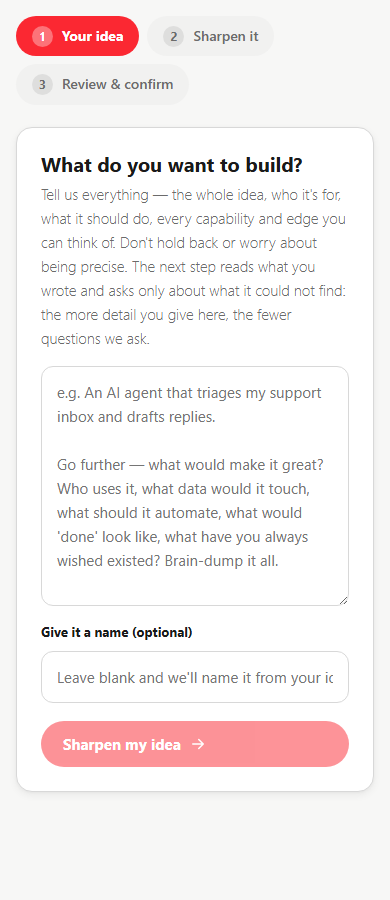

The review step as a confirmation gate, the fail-closed "have an AI call me" option, the Story 000 handoff on delivery, and the step 1 copy. Rendered at 1440 and 390.
frontend/src/pages/portal/projects/__tests__/discoveryHarness.dump.test.tsx against a fixture preview, then dressed in the app's real stylesheets and
captured by scripts/captureDiscoveryHarness.js. They prove layout at each width. They do not prove production behaviour: no student session, no
real backend, no real call. The production walkthrough is a separate step after deploy, with scripts/captureProductionScreenshots.js.
Every capture reported horizontalOverflow=false pageErrors=0.
What the server will record on Confirm, under human headings in the student's own words; the receipt for the two questions the description already answered; the four things still unanswered, in plain language, with "none of these blocks the build"; and the call offer, shown only because the fixture says a call is available. The consent text is the checkbox label. The number field appears only once ticked.


The fallback. The read-back is unavailable, so the step says so in one line and echoes the raw answers instead of a blank review. Confirm still works: the truth is written from the same inputs either way. No call offer, because the server could not say one was available.


Replaces the generic "your plan is ready" line. Names Story 000, says what its prompt does (connects the repo so the platform can see pushes) and what it records (what was understood and what was not), quotes the counts from the stored truth when it has them, and opens the story. The call notice below it is the refused case, worded so nobody expects a ring.


One sentence added to the lead: the next step asks only about what it could not find, so the more detail here, the fewer questions.


| Claim | Evidence |
|---|---|
| The surfaces lay out at 1440 and 390 with no horizontal overflow | Eight captures above, each horizontalOverflow=false pageErrors=0 |
| The words on screen are the words the server sends | Wizard and banner suites (25 + 9 tests) assert the labels, the consent text and the counts come from the response |
| Behaviour in production | Not verified. Nothing in Phase 5 is deployed. After deploy: authenticated capture against the live app, and a real intake through the wizard. |
| A call can be placed | Not verified, by design. No agent is configured anywhere; the option does not render until one is. |